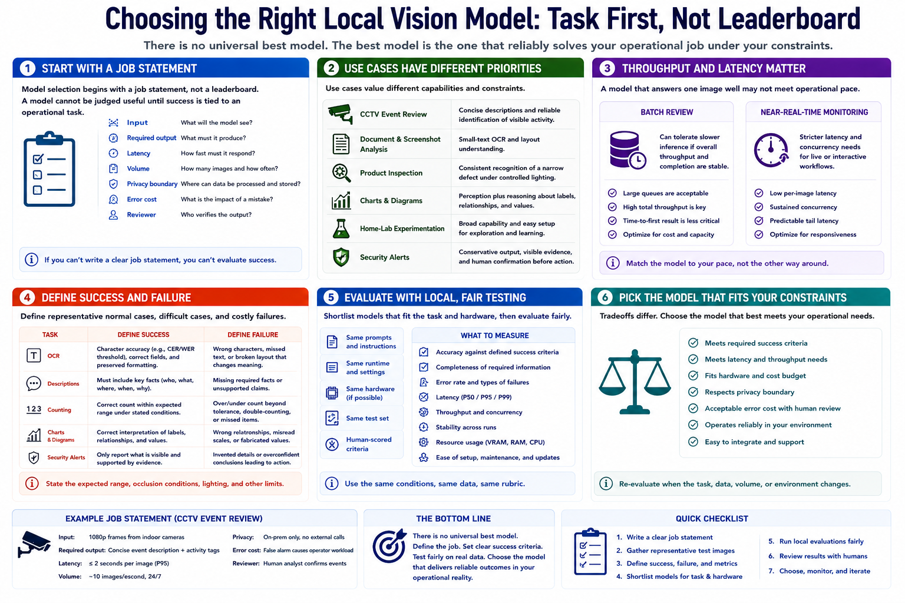

Define the Use Case First
Connecting to LMS... Progress: in progress

Narration
Model selection begins with a job statement, not a leaderboard. Describe the input, required output, latency, volume, privacy boundary, error cost, and reviewer. A model cannot be judged useful until success is tied to an operational task.
CCTV event review may need concise descriptions and reliable identification of visible activity. Document and screenshot analysis may depend on small-text OCR and layout. Product inspection may require consistent recognition of a narrow defect under controlled lighting.
Charts and diagrams combine perception with reasoning about labels, relationships, and values. Home-lab experimentation may favor broad capability and easy setup. Security alerts require conservative output, visible evidence, and human confirmation before consequential action.
Batch review can tolerate slower inference if throughput and completion are stable. Near-real-time monitoring has stricter latency and concurrency needs. A model that answers one image well may not keep pace with several streams or a large queue.
Define representative normal cases, difficult cases, and costly failures. For OCR, specify character accuracy and formatting. For descriptions, define which facts must be present and which unsupported claims are unacceptable. For counting, state the expected range and occlusion conditions.
No universal best model exists because use cases value different tradeoffs. Shortlist models that fit the task and hardware, then evaluate them locally with the same prompts, runtime conditions, and human-scored criteria.